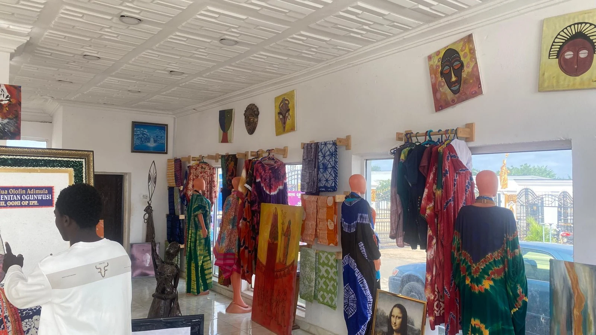
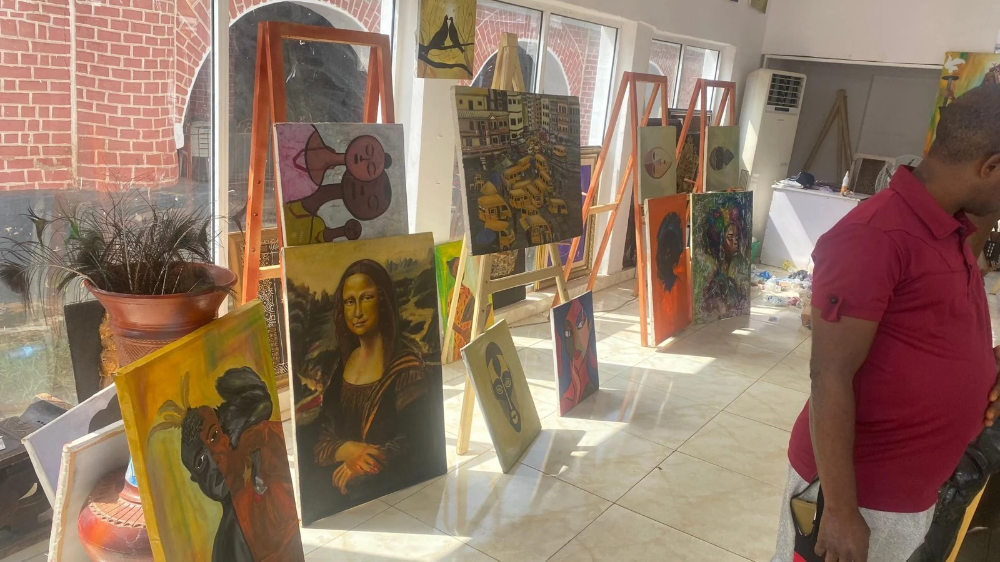

SERIES
Last Song of the Night
Explore the series and enquire.
Painting faces, colour and the
beauty that survives difficulty.
Wurld (Adeniyi Waris) is a Nigerian painter born in Ibadan and raised in Ile-Ife, Osun State. His name means hope — and hope is the thread that runs through every canvas.
His practice began at six years old, turning cartons and crayons into pictures. By the time he was drawing in class, he knew it was more than a pastime: it was his gift. Trained in drawing at a technical college in Iwo and later in Fine and Applied Art at Osun State College of Education, he now paints in acrylic and oil, building expressive portraits around faces, eyes, flowers and bold, saturated colour.
Inspired by African culture, fashion and the people around him, Wurld paints what he feels as much as what he sees — celebrating identity and beauty while insisting that even in difficult times, there is still something luminous waiting just beyond the present moment.
“I don’t just paint what I see; I paint what I feel and imagine.”WURLD
Every work begins in the mind — an idea, an imagined final image, a palette.
Then it is built, step by step, until it feels complete and carries the feeling he
first imagined.
Expressive, colourful and realistic. Bold colour, detailed features and creative backgrounds give each work its own identity.
Leonardo da Vinci / Aina Onabolu / Ben Enwonwu / Bruce Onobrakpeya / El Anatsui / Njideka Akunyili Crosby / Yinka Shonibare / Frida Kahlo / David Hockney / Pablo Picasso


A study of how fashion lets people say who they are. Colour, facial detail, clothing and pattern combine into a strong visual identity that celebrates confidence, individuality and personal style.
Wurld began from a simple thought — how appearance can speak without words — and used expressive details and strong colour to give the work the energy of fashion itself.
Viewers should feel inspired, confident and free to express their own identity.Enquire about The Fashion ↗
A reflection of Wurld’s journey, imagination and the way he sees beauty and life around him. Each piece carries its own story, but all share one message: even when life is difficult, there is still beauty and hope.
Faces, bold colour and meaningful backgrounds make each painting feel alive and personal — a face, a colour or a quiet moment telling a story without words.
About 10, more in development
The Fashion · The African Beauty
Planning stage
Larger works, new colours and materials
Original paintings by Wurld, available to collectors. Enquire for details, availability and
viewing.
Explore the series and enquire.
2026 · Oil on canvas · ₦500,000
Title, medium and price available on enquiry.
Title, medium and price available on enquiry.
Title, medium and price available on enquiry.
More works are being added. Ask Wurld what is available →
Find a painting that speaks to you, commission a self-portrait, or discuss a collaboration.
Original works and self-portrait commissions start from ₦200,000. Final pricing and availability are confirmed directly with the artist.
Chat directly on WhatsApp ↗Share your idea, preferred size and timeline with Wurld. Discuss the details and agree on pricing and delivery directly before placing an order.
Yes—use the enquiry form to request a viewing. Wurld will confirm availability and arrangements with you.
Ask about the artwork by its number. Titles, dimensions, pricing and availability will be confirmed by the artist.
Solo & international exhibitions
UK · USA · France · Italy · Australia
“I want to become an artist who inspires people, tells meaningful stories, celebrates culture, and leaves a lasting impact.”WURLD